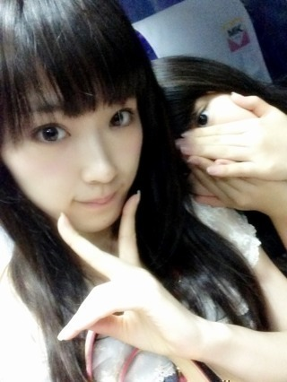
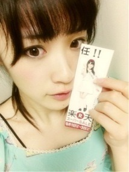

2013/0831Sat（´-`）.｡oO(か ずみん×213
いつも応援ありがとうございます！

隣はだーれだ(っ*´x`)っ？？
ZEPPツアー、
無事に終了しました( ∩ˇωˇ∩)
乃木坂は劇場がないので、
今回のライブで沢山のことを
学びました。
途中、足を負傷してしまって
悔しい思いもありましたが、
みんなに助けてもらって
東京公演は悔いなく全力で
終えることができました^ ^
来てくださったみなさん、
応援してくださったみなさん、
影で支えてくださったスタッフさん、
そして大好きなメンバーのみんな、
本当にありがとうございました！
10月6日に
国立代々木競技場第一体育館での
ライブも決まったので、頑張りますよーっ！
よろしくお願いします！！
明日から楽天スーパーSALEです♪
乃木坂がCMに
出させていただきました！
嬉しいねぇ( *´艸｀)
見た方いらっしゃいますか〜？？
小さくアメイジング
させてもらってるので、
よかったら探してみてください(*´ω`*)ﾉ
私はこの機会にキャリーケースでも
買おうかな...！？
ちょっと大きめのが欲しいっ♪

そして明日は京都握手会ヽ(´>∀<`*)
かずの元へおいでやんす！ふふふ
↑ひなちまのマネっ♪
かずって言うと、
サッカーのカズさんみたいだな！笑
さんまのまんまは
関西では今日放送だったみたいね！
収録楽しかった！！
ぜひまたお会いしたいです^ ^
それでは、今日はこの辺でっ♪
台風気をつけてね。
ばいばい( ´ ▽ ` )ﾉ
2013/08/31 21:18
コメント(413)
バケラッタ！
今回は上手に居たからかずみんいっぱい見れて幸せだった♪ヽ(´▽｀)/
お疲れ様です。ヽ( ´ー｀)ノ
Zepp東京おつかれさまでした
この前かなりんブログにコメ
してたでしょー
感動したよ(/ω＼*)
んな、明日京都個別ふぁいとっ！
夢で会おうぜアディオス
(*´ω｀*)(*´ω｀*)(*´ω｀*)
かずみんお疲れ様！
こんにちは(^_^)/
最終公演お疲れ様です
盛り上がったみたいで良かった
追加公演決まって良かったね
いつも応援してるよ
最終公演お疲れ様です
盛り上がったみたいで良かった
追加公演決まって良かったね
いつも応援してるよ
とりあえず…アメイジング！！
かずみん、公演お疲れ様でした＼(^o^)／
足痛めたりしてたいへんだったかもしれないけど、無事で何よりです！
となりは、まいまい？
アメイジングさがすー笑笑
足痛めたりしてたいへんだったかもしれないけど、無事で何よりです！
となりは、まいまい？
アメイジングさがすー笑笑
隣はいくちゃんかな
札幌ライブほんとに楽しかったよ 代々木は行けないけど札幌から応援してるよ
代々木は行けないけど札幌から応援してるよ
明日の個別で皆からパワーもらってきてね
札幌ライブほんとに楽しかったよ
明日の個別で皆からパワーもらってきてね
かずみんおつかれさま！！
隣にいるのは…ひなぴょん(´・ω・｀)??
昨日のライブおつかれさま！！
脚も心配だったけど、最後無事にライブを終えることができてよかった！
昼夜とも上手側でみれたから、かずみんの踊りや歌がよくみれたよ＼(^o^)／
ほんとにかずみん最高だった！！
代々木も楽しみにしてるね(´▽｀)！
明日の京都個別いきたいよ〜ヽ(；▽；)ノ
わたしは次にかずみんに会えるのは九月のビッグサイトだ…
ではでは、明日の握手会たのしんでね〜
おやすみ( ´ ▽ ` )ﾉ
隣にいるのは…ひなぴょん(´・ω・｀)??
昨日のライブおつかれさま！！
脚も心配だったけど、最後無事にライブを終えることができてよかった！
昼夜とも上手側でみれたから、かずみんの踊りや歌がよくみれたよ＼(^o^)／
ほんとにかずみん最高だった！！
代々木も楽しみにしてるね(´▽｀)！
明日の京都個別いきたいよ〜ヽ(；▽；)ノ
わたしは次にかずみんに会えるのは九月のビッグサイトだ…
ではでは、明日の握手会たのしんでね〜
おやすみ( ´ ▽ ` )ﾉ
全国ツアーお疲れ様でした
東京は無事に出れて良かったですね
僕は福岡の昼と夜しか参加できませんでしたが、この夏最高の思い出になりました
昨日はアメーバでライブの模様を見てましたが、パソコンの前で号泣してしまいました
代々木でのライブはチケットが取れたら参加します
乃木坂のファンで良かった～～～
東京は無事に出れて良かったですね
僕は福岡の昼と夜しか参加できませんでしたが、この夏最高の思い出になりました
昨日はアメーバでライブの模様を見てましたが、パソコンの前で号泣してしまいました
代々木でのライブはチケットが取れたら参加します
乃木坂のファンで良かった～～～
台風は温帯低気圧に変わったでやんすー←笑
かずみんお疲れさま！
かずみんお疲れさま！
LIVEお疲れ様でした！（笑）
今日は自分もLIVEで疲れたのでバイトまで寝てました（笑）
楽天のCMのアメイジング気付きましたよ〜*\(^o^)/*
代々木も絶対行きます！
今日は自分もLIVEで疲れたのでバイトまで寝てました（笑）
楽天のCMのアメイジング気付きましたよ〜*\(^o^)/*
代々木も絶対行きます！
足治って良かったです！
かずみんが悔いなくLIVEを出来たことが自分も嬉しいです(^o^)/
怪我せず頑張ってくださいo(^▽^)o
アメイジング＼(^o^)／
かずみんが悔いなくLIVEを出来たことが自分も嬉しいです(^o^)/
怪我せず頑張ってくださいo(^▽^)o
アメイジング＼(^o^)／
楽天のCMﾊﾞﾝﾊﾞﾝ見てるよ!!
今日は３回見たよ＼(^o^)／
出現率アメージング＼(^o^)／ww
ライブ出れたのかー(*^^*)
良かったね、本当に！
心配してたんだよねー(^^)
次は代々木で、更にパワーアップして
弾けとんでくだされ(^q^)
今日は３回見たよ＼(^o^)／
出現率アメージング＼(^o^)／ww
ライブ出れたのかー(*^^*)
良かったね、本当に！
心配してたんだよねー(^^)
次は代々木で、更にパワーアップして
弾けとんでくだされ(^q^)
２回目ごめんっ！！
ぴかポンがね！ぴかポンがね！
かずみんレポとか教えてくれて
ね！ほんとやばいんだよ！( )
またかずみんと握手したい！ｗ
ぴかポン！ぴかポン！ぴかポン！
夢で会おうぜ！ぴかポン！
(*´ω｀*)(*´ω｀*)(*´ω｀*)
昼公演見に行ったよ！
足のケガで出演出来なかったりするかなって思ったけど全部出れて良かった！
ケガには気をつけてこれからも頑張ってね！
キャラが面白くていつも笑ってます笑
次に向けて頑張って！
足のケガで出演出来なかったりするかなって思ったけど全部出れて良かった！
ケガには気をつけてこれからも頑張ってね！
キャラが面白くていつも笑ってます笑
次に向けて頑張って！
かずみん可愛い////
かずみん、お疲れさまです！
Zeppツアーお疲れさまでした。
そして、代々木でのライブおめでとうー!!
行きたい！でもチケット取れるのか？(^^;
足のコトとか無理しないように、京都握手会楽しんできてね♪
かずみんいつも応援してるからねー！＼(^o^)／
写真の隣は、れなりんかなぁ。。
Zeppツアーお疲れさまでした。
そして、代々木でのライブおめでとうー!!
行きたい！でもチケット取れるのか？(^^;
足のコトとか無理しないように、京都握手会楽しんできてね♪
かずみんいつも応援してるからねー！＼(^o^)／
写真の隣は、れなりんかなぁ。。
こんばんわ
昨日はお疲れ様でした
自分は行けなかったのでアメーバピグで
見てましたよ
最高でした
楽天のCM観ましたよ
では明日の個握がんばってください
かずみんー
コオくんが熱出しちゃったー
どーしよー
明日きたらなおしてあげて！
コオくんが熱出しちゃったー
どーしよー
明日きたらなおしてあげて！
かずみん＼(^o^)／
東京のLIVEお疲れ様です(>_<)
観に行ったけど最高によかったよ♪
代々木での追加公演おめでとう( ´ ▽ ` )ﾉ
必ず観にいくねー(((o(*ﾟ▽ﾟ*)o)))
新曲早く楽しみにしてるね♪
質問します！
ONE PIECEでどの
キャラとシーンが好きですか？
じゃまたねー♪
そんなおれもカズだよ笑
お疲れ様(^з^)-☆
隣は若月？
お疲れ様(^з^)-☆
隣は若月？
かずみーんヽ(・∀・)ノ
Zeppツアー本当にお疲れ様♪
またひとつ乃木坂は大きくなったね！
明日かずに会いにいくよー＼(^-^)／
ゆみちでした(・∀・)
Zeppツアー本当にお疲れ様♪
またひとつ乃木坂は大きくなったね！
明日かずに会いにいくよー＼(^-^)／
ゆみちでした(・∀・)
えっ、誰？ひなちゃん？
分からん。
かずみんこんばんは。
全国ツアーお疲れさまでした。
千秋楽、全力出せたようで良かった。
代々木のライブも楽しみにしてるよ。
楽天のCMはまだ見れてないんだ。
特設サイトの動画は見たけども。
アメージングチェックするよ。
京都握手会楽しんでこいよー
分からん。
かずみんこんばんは。
全国ツアーお疲れさまでした。
千秋楽、全力出せたようで良かった。
代々木のライブも楽しみにしてるよ。
楽天のCMはまだ見れてないんだ。
特設サイトの動画は見たけども。
アメージングチェックするよ。
京都握手会楽しんでこいよー
一実さんお疲れ様です♪
代々木ライブ
新曲発売決定
おめでとう(^-^)
CM見たよ！
やっぱり乃木坂ちゃんは見てて癒されるなぁ
足は大丈夫？
これからも応援してるよ
ジュニアでした♪
代々木ライブ
新曲発売決定
おめでとう(^-^)
CM見たよ！
やっぱり乃木坂ちゃんは見てて癒されるなぁ
足は大丈夫？
これからも応援してるよ
ジュニアでした♪
ベーちゃんです！！
東京夜公演行きました(*^^*)
生でサプライ発表見たときはほんと鳥肌立ちましたよ(^^;;
かずみんがたくさん見れて嬉しかった\(//∇//)\
幸せ〜
俺的にでこぴんはマジ最高♪
代々木も最高のパフォーマンスを楽しみにしてます！
それまでに足は治しなよー(￣▽￣)
そういえば電車で楽天セールの広告みたいなの見ましたよ
相変わらずかずみん可愛い\(//∇//)
あれを見てくれた人たちが少しでも乃木坂に興味を持ってくれると嬉しいね(*^^*)
ってことでまた〜
アメイジング*\(^o^)/*
東京夜公演行きました(*^^*)
生でサプライ発表見たときはほんと鳥肌立ちましたよ(^^;;
かずみんがたくさん見れて嬉しかった\(//∇//)\
幸せ〜
俺的にでこぴんはマジ最高♪
代々木も最高のパフォーマンスを楽しみにしてます！
それまでに足は治しなよー(￣▽￣)
そういえば電車で楽天セールの広告みたいなの見ましたよ
相変わらずかずみん可愛い\(//∇//)
あれを見てくれた人たちが少しでも乃木坂に興味を持ってくれると嬉しいね(*^^*)
ってことでまた〜
アメイジング*\(^o^)/*
かずみんこんばんは～
ツアーお疲れ！
全力で出来たんならよかったね(^o^)
楽天のCMやってるね
けど、まいやんとかに目が行っちゃう(笑)
かずみん探す！！
さんまのまんまは自分とこは5週くらい遅れてるのかな？乃木坂はまださきだ～
それじゃあ、代々木おめでとう！
これからも頑張ってね
応援してるよ!(^^)!
バイバーイ(^_^)ゞ
ツアーお疲れ！
全力で出来たんならよかったね(^o^)
楽天のCMやってるね
けど、まいやんとかに目が行っちゃう(笑)
かずみん探す！！
さんまのまんまは自分とこは5週くらい遅れてるのかな？乃木坂はまださきだ～
それじゃあ、代々木おめでとう！
これからも頑張ってね
応援してるよ!(^^)!
バイバーイ(^_^)ゞ
ライブお疲れさまでした！
アメーバでしたがみましたよ～(^_^)ﾉ
かずみん出てて良かった！
足気をつけてください(^^)/
走れbicycle聴けて良かったです(≧∀≦)
乃木坂46を好きになるきっかけとなった曲です！
嬉しかった!(^^)!
明日の握手会頑張ってください(^_^)ﾉ
アメーバでしたがみましたよ～(^_^)ﾉ
かずみん出てて良かった！
足気をつけてください(^^)/
走れbicycle聴けて良かったです(≧∀≦)
乃木坂46を好きになるきっかけとなった曲です！
嬉しかった!(^^)!
明日の握手会頑張ってください(^_^)ﾉ
かずみーんヽ(・∀・)ノ
隣は陽菜ちゃんかなー?
分かんないなー(笑)
足はもう大丈夫(>_<)?
Zepp名古屋夜のかずみんの涙が忘れられません(ToT)
相当悔しかったんだね.....
代々木いけないかも(T_T)
明日かずみんに会えるー＼(^-^)／
ゆみちでした(・∀・)
隣は陽菜ちゃんかなー?
分かんないなー(笑)
足はもう大丈夫(>_<)?
Zepp名古屋夜のかずみんの涙が忘れられません(ToT)
相当悔しかったんだね.....
代々木いけないかも(T_T)
明日かずみんに会えるー＼(^-^)／
ゆみちでした(・∀・)
ライブお疲れ様
かずみんは辛い思いしたよねでもね、かずみんの思いはしっかりと届いているよ
だから気にしないで！？
アメイジング分からなかった(^_^;)
今後注目してみてみるね！
これからも、かずみんと乃木坂を応援して、底上げして行くから前だけを向いて坂を上っていってね
ライブには行けないけど応援しているから楽しんできてね(●´ω｀●)
こじたくでした～
かずみんは辛い思いしたよね
だから気にしないで！？
アメイジング分からなかった(^_^;)
今後注目してみてみるね！
これからも、かずみんと乃木坂を応援して、底上げして行くから前だけを向いて坂を上っていってね
ライブには行けないけど応援しているから楽しんできてね(●´ω｀●)
こじたくでした～
お疲れ様です。
全国ツアーも終わりましたね。
全力で終えれたことが良かったですね。
次回の代々木ＦＩＮＡＬは何としても行きますよ。
やっと休日ですし、チケット当たれ。
楽天ＣＭは何回か流れているの見ましたよ。
じっくりは見れてませんがね。また確認しておきます。
楽天ポイント結構あったから何か買ってみようかな。
では、明日の京都行きます。
それではまた次回。
全国ツアーも終わりましたね。
全力で終えれたことが良かったですね。
次回の代々木ＦＩＮＡＬは何としても行きますよ。
やっと休日ですし、チケット当たれ。
楽天ＣＭは何回か流れているの見ましたよ。
じっくりは見れてませんがね。また確認しておきます。
楽天ポイント結構あったから何か買ってみようかな。
では、明日の京都行きます。
それではまた次回。
隣誰( ･_･)？難しい( ･_･;)
かずみんライブお疲れ様っ(>_<)ゞ
かずみん頑張ったね(;_;)
ピグでしか観れなかったけど楽しかったよん(≧∇≦*)
代々木チケット取れたら行くねん(≧▽≦)♪
かずみんライブお疲れ様っ(>_<)ゞ
かずみん頑張ったね(;_;)
ピグでしか観れなかったけど楽しかったよん(≧∇≦*)
代々木チケット取れたら行くねん(≧▽≦)♪
かずみん バケラッタ ＼(^o^)／
隣はだれだろ
ひなぴょん かな？
まいまい かな？
若月 かな？
この3人の中の誰かと予想 (｀･ω･´)
全然絞れてなくてごめんね 笑
全国ツアー千秋楽、東京公演おつかれさま (^O^)／
昨日はアメーバピグで見てたよ！
東京もすごい盛り上がりだったね ♫
足はもう大丈夫？(´･_･`)
あまり無理はしないでね！
そして！代々木体育館での追加公演決定おめでとう
(((o(*ﾟ▽ﾟ*)o)))
夏休み終わっちゃってて行けないけど、遠くから応援してるね！
全国ツアー本当の最終公演
最高のライブになるといいね (*^^*)
楽天スーパーSALEのCM見たよー ( ´ ▽ ` )ﾉ
でも、アメイジングは見つけられなかったから
次流れた時は探してみるね (o^^o)
さんまのまんま録画してるからあとで見るね (=ﾟωﾟ)ﾉ
明里だよん(。・ω・)ノ゛
全国ツアーお疲れ様でした！
え、隣…誰…
ちはるんのクイズとは違って激むず…
とりあえず川後さんで…
東京は全力で出来たのか！そりゃよかった♪
10月6日の代々木体育館？も全力でね！
出来ることなら行きたいけど無理そう…
あ！ＣＭ！
見たよ見たよ？
でも早くて追い付けない(泣)
そして２回ぐらいしか見てない…
ごめんね(´；ω；`)
写メかわいすぎ♪
かわいすぎ♪かわいすぎ♪
あー明日個別か…
お疲れの中だけど頑張って！
さんまのまんままだ見てない(´；ω；`)
見たいなぁ
ではー
またねヾ(´ー｀)ノ
全国ツアーお疲れ様でした！
え、隣…誰…
ちはるんのクイズとは違って激むず…
とりあえず川後さんで…
東京は全力で出来たのか！そりゃよかった♪
10月6日の代々木体育館？も全力でね！
出来ることなら行きたいけど無理そう…
あ！ＣＭ！
見たよ見たよ？
でも早くて追い付けない(泣)
そして２回ぐらいしか見てない…
ごめんね(´；ω；`)
写メかわいすぎ♪
かわいすぎ♪かわいすぎ♪
あー明日個別か…
お疲れの中だけど頑張って！
さんまのまんままだ見てない(´；ω；`)
見たいなぁ
ではー
またねヾ(´ー｀)ノ
こんばんは！かずみん！！
さんまのまんま最高でした(^^)v
放送の後に友達と話しててちょうど観てたみたいで
乃木坂の事はあまり知らない友達だったので
話してたらかずみんに凄く興味を持ってました。
ちゃんとかずみんの話しましたよ(^_^;)
楽天のCM凄く流れてます。
明日の京都は楽しみです。
ちょっとツアーのこととか語り合いたいです。
ではまた明日！楽しみにしています！！
バイバイ！
さんまのまんま最高でした(^^)v
放送の後に友達と話しててちょうど観てたみたいで
乃木坂の事はあまり知らない友達だったので
話してたらかずみんに凄く興味を持ってました。
ちゃんとかずみんの話しましたよ(^_^;)
楽天のCM凄く流れてます。
明日の京都は楽しみです。
ちょっとツアーのこととか語り合いたいです。
ではまた明日！楽しみにしています！！
バイバイ！
かずみーんヽ(・∀・)ノ
楽天のCM見たよー＼(^-^)／
その栞はどーやったや手にはいるのかね(笑)？
明日は久々にかずみんとお話できるぞー＼(^^)／
楽しみで眠れない!
ってことでおやすみー(笑)
ゆみちでした(・∀・)
楽天のCM見たよー＼(^-^)／
その栞はどーやったや手にはいるのかね(笑)？
明日は久々にかずみんとお話できるぞー＼(^^)／
楽しみで眠れない!
ってことでおやすみー(笑)
ゆみちでした(・∀・)
バケラッター★☆★☆★☆
足大丈夫でよかったね♪
本当は、東京のライブ行きたかったよ(T_T)
でもでも、代々木絶対行きます㌶
そして、楽天のCM見たよ！
ミニアメイジング発見したよ(笑)
かずみんにキャリーケースプレゼントしよっ
かなww
まぁ、明日は夢にも見た京都パルスプラザで
の個握だね♪
僕は、今回かずみん単推しなので、かずみん
だけを沢山行きます(о´∀`о)
だから、握手の時に、前の京都パルスプラザ
の時に着ていて、かずみんにハンドルネーム
付けて貰った服で行くので、覚えていたら
【ブルー君】と呼んでね！
ちなみに、お土産用意してるので、お楽しみ
に(。-∀-)
では、明日の個握楽しみにしてまーーーす
あーーめーーいーーじーーんーーぐ
byブルー君★☆★☆★☆★☆★☆★☆★
足大丈夫でよかったね♪
本当は、東京のライブ行きたかったよ(T_T)
でもでも、代々木絶対行きます㌶
そして、楽天のCM見たよ！
ミニアメイジング発見したよ(笑)
かずみんにキャリーケースプレゼントしよっ
かなww
まぁ、明日は夢にも見た京都パルスプラザで
の個握だね♪
僕は、今回かずみん単推しなので、かずみん
だけを沢山行きます(о´∀`о)
だから、握手の時に、前の京都パルスプラザ
の時に着ていて、かずみんにハンドルネーム
付けて貰った服で行くので、覚えていたら
【ブルー君】と呼んでね！
ちなみに、お土産用意してるので、お楽しみ
に(。-∀-)
では、明日の個握楽しみにしてまーーーす
あーーめーーいーーじーーんーーぐ
byブルー君★☆★☆★☆★☆★☆★☆★
かずみん！おっすーこんばんは〜(*￣ﾟ￣)/･
ライブ全日程終わっちゃったねー
めっちゃあっという間だった気がする！！Σヾ(＞ω＜=)
って言っても ...チケット買えなくて一回も行けなかったんだけど ...(￣▽￣;)
だから！代々木決まったときめっちゃ嬉しかった！！(((o(*ﾟ▽ﾟ*)o)))
アメイジング＼(^o^)／
代々木は絶対行くぜぜぜぜ〜い！！
隣は飴ムチの相方陽菜ちゃん！！(*｀ω´*)ﾄﾞﾔｯ
じゃあ、かずみん明日も握手会頑張ってね！！
かずみんのこと、ずっと応援してるよー(o・・o)/~
ライブ全日程終わっちゃったねー
めっちゃあっという間だった気がする！！Σヾ(＞ω＜=)
って言っても ...チケット買えなくて一回も行けなかったんだけど ...(￣▽￣;)
だから！代々木決まったときめっちゃ嬉しかった！！(((o(*ﾟ▽ﾟ*)o)))
アメイジング＼(^o^)／
代々木は絶対行くぜぜぜぜ〜い！！
隣は飴ムチの相方陽菜ちゃん！！(*｀ω´*)ﾄﾞﾔｯ
じゃあ、かずみん明日も握手会頑張ってね！！
かずみんのこと、ずっと応援してるよー(o・・o)/~
バケラッター！
Zeppツアーお疲れ様でした！
怪我の具合はどうですか？
千秋楽見に行きました！
かずみんが元気に踊ってる姿を見れて
ほんっとによかったです！
休みができたらゆっくり休んでください！
Zeppツアーお疲れ様でした！
怪我の具合はどうですか？
千秋楽見に行きました！
かずみんが元気に踊ってる姿を見れて
ほんっとによかったです！
休みができたらゆっくり休んでください！
僕も、部活の時ですが足を負傷して
長い間練習に参加出来ず悔しい思いを
しました。
一実さんの悔しかった思いを次のライブなどで発散させてください
応援してます(>_<)
長い間練習に参加出来ず悔しい思いを
しました。
一実さんの悔しかった思いを次のライブなどで発散させてください
応援してます(>_<)
バケラッタ!!!!＼(^o^)／うねです！
昨日はアメーバピグでlive見ましたよ!!!!代々木体育館おめでとうございます!!!!
なんかめちゃくちゃ鳥肌立ちましたw
かずみんのポニーテール可愛すぎました(〃ω〃)
さんまのまんまは広島おくれとるけん1か月我慢しますw
明日の握手会頑張って下さいね!!!!応援してまーす＼(^o^)／
昨日はアメーバピグでlive見ましたよ!!!!代々木体育館おめでとうございます!!!!
なんかめちゃくちゃ鳥肌立ちましたw
かずみんのポニーテール可愛すぎました(〃ω〃)
さんまのまんまは広島おくれとるけん1か月我慢しますw
明日の握手会頑張って下さいね!!!!応援してまーす＼(^o^)／
ライブ本当に楽しかったよ！
代々木も応募したから、当たったら絶対行くね＼(^o^)／
明日の京都と21日の東京も会いに行くから(´∀｀)
かずみんお疲れ様ーじんぐヽ(*´∀｀)ノ
京都個別行くからまっててねー(笑)
楽しみにしてます。
京都個別行くからまっててねー(笑)
楽しみにしてます。
ライブお疲れ様( ・∇・)
乃木坂46の楽天のCMまだ見れてないよ(´・ω・`)
一実さん、こんばんは！
ツアーお疲れさまでした！アメーバで見てました！ずいぶん成長が伺えました！みんなで悩んで考えて、結果としてツアー完走！素晴らしいことです！札幌夜公演行けたのはほんとに嬉しかった！感謝しています！負傷しながらもがんばる一実さん、尊敬します！
この夏、皆さんはいちばん輝いてましたよ！最高の思い出、一生忘れられない宝物をありがとうございました！熱い夏をくれてありがとうございました！
楽天CM見れました！一回だけ…（笑）これからも流れることを祈ります（笑）
明日がんばってください！
ツアーお疲れさまでした！アメーバで見てました！ずいぶん成長が伺えました！みんなで悩んで考えて、結果としてツアー完走！素晴らしいことです！札幌夜公演行けたのはほんとに嬉しかった！感謝しています！負傷しながらもがんばる一実さん、尊敬します！
この夏、皆さんはいちばん輝いてましたよ！最高の思い出、一生忘れられない宝物をありがとうございました！熱い夏をくれてありがとうございました！
楽天CM見れました！一回だけ…（笑）これからも流れることを祈ります（笑）
明日がんばってください！
かずみん足大丈夫ですかー？(;_;)
さんまのまんまはんぱじゃない面白さでしたよー！！
かずみんとさんまさんの笑い方最高すぎます(笑)
めっちゃ面白かったので録画したやつしっかり保護したおきました♪ヽ(´▽｀)/
明日３部いくのでよろしくお願いします！かずみんの私服楽しみです♪
飴のネックレスしてくれるとあれかわいいので嬉しいです(*^^*)
さんまのまんまはんぱじゃない面白さでしたよー！！
かずみんとさんまさんの笑い方最高すぎます(笑)
めっちゃ面白かったので録画したやつしっかり保護したおきました♪ヽ(´▽｀)/
明日３部いくのでよろしくお願いします！かずみんの私服楽しみです♪
飴のネックレスしてくれるとあれかわいいので嬉しいです(*^^*)
かずみん、こんばんは＼(^o^)／
じゅんこです。
かずみん、本当にお疲れ様！
全力でやり遂げて本当に良かった！
私も行きたかったー(;_;)
でも代々木体育館は絶対行くからね！！
楽天のCM見たよ！
アメイジングやってるの？？
気づかなかった…
次みたときは絶対探すね！
1枚目の写真のとなりは陽菜ちゃんかな…？
かずみん、大好き♡
じゅんこです。
かずみん、本当にお疲れ様！
全力でやり遂げて本当に良かった！
私も行きたかったー(;_;)
でも代々木体育館は絶対行くからね！！
楽天のCM見たよ！
アメイジングやってるの？？
気づかなかった…
次みたときは絶対探すね！
1枚目の写真のとなりは陽菜ちゃんかな…？
かずみん、大好き♡
かずみん、コンバケラッタ！！
さんまのまんま面白かったですよ♪
かずみん、話の中心に結構いましたね！
明日の握手会、晴れてほしいです！
僕は2部からお邪魔します。
楽天スーパーセール楽しみです！
僕は楽天を利用することが多いので
今回の乃木坂の公式サポーターへの就任
嬉しかったです♪
それでは
かずみん、おやすみなさい
ビビ
さんまのまんま面白かったですよ♪
かずみん、話の中心に結構いましたね！
明日の握手会、晴れてほしいです！
僕は2部からお邪魔します。
楽天スーパーセール楽しみです！
僕は楽天を利用することが多いので
今回の乃木坂の公式サポーターへの就任
嬉しかったです♪
それでは
かずみん、おやすみなさい
ビビ
こんばんは！ライブお疲れ様＼(^o^)／
隣はまいまいかな？(勘でごめんね！)
東京昼公演本当に楽しかった！
握手も好きだけどライブも同じくらい好き！
普段弾ける機会が無いからより弾けちゃった(笑)
かずみんが元気にライブ楽しんでて嬉しかったしこっちも楽しかった！
代々木のライブももちろん行きたい！
チケット当たるのを祈ってます(笑)
明日京都での握手楽しんで！
隣はまいまいかな？(勘でごめんね！)
東京昼公演本当に楽しかった！
握手も好きだけどライブも同じくらい好き！
普段弾ける機会が無いからより弾けちゃった(笑)
かずみんが元気にライブ楽しんでて嬉しかったしこっちも楽しかった！
代々木のライブももちろん行きたい！
チケット当たるのを祈ってます(笑)
明日京都での握手楽しんで！


こんばんわーʔ•̫͡•ཻʕ
代々木楽しみだよー(*´艸｀)ｷｬ